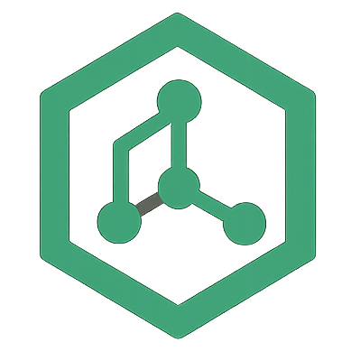

@system
ToFarmer engine initialized...

🌱 ToFarmer masih eksperimen & belum proyek matang. Bukan layanan keuangan/investasi, dan tanpa jaminan apa pun. Mau daftar? Baca penjelasan singkatnya dulu ya.
Loading...
Estimasi waktu tiap user menuju 100.000 TOF (6% compounding/bulan)